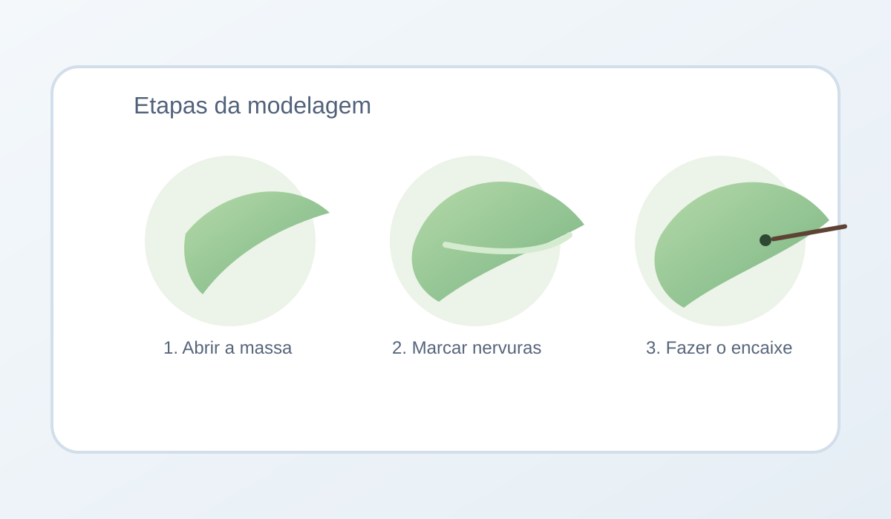

Artesanato
Meu primeiro post: como comecei a criar peças com argila fria

Sempre gostei de criar coisas com as mãos, mas só recentemente decidi transformar isso em um hábito do meu dia a dia. Foi aí que descobri a argila fria: fácil de modelar, acessível e perfeita para quem quer começar no artesanato sem equipamentos complexos.
O que usei para começar
Minha lista inicial foi bem enxuta: argila fria, rolinho de massa, estecas simples, tinta acrílica e verniz. Também usei uma base lisa para modelar e um potinho com água para acertar pequenas imperfeições.

Meu primeiro projeto
Meu primeiro projeto foi um pequeno porta-incenso em formato de folha. Modelei a peça, deixei secar por 24 horas e depois pintei com tons suaves. Ficou simples, bonito e trouxe um toque artesanal para a decoração.
O que aprendi nessa experiência
Percebi que trabalhar com argila fria desacelera a mente. Enquanto modelo cada detalhe, fico mais presente. Também aprendi que a textura e os pequenos detalhes manuais deixam cada peça única e cheia de personalidade.
Para quem quer começar hoje
Comece com uma peça pequena, como pingente, mini vaso ou porta-incenso. Reserve um tempo calmo para modelar, deixe secar completamente antes de pintar e aproveite o processo sem pressão de perfeição.
Voltar para o blog